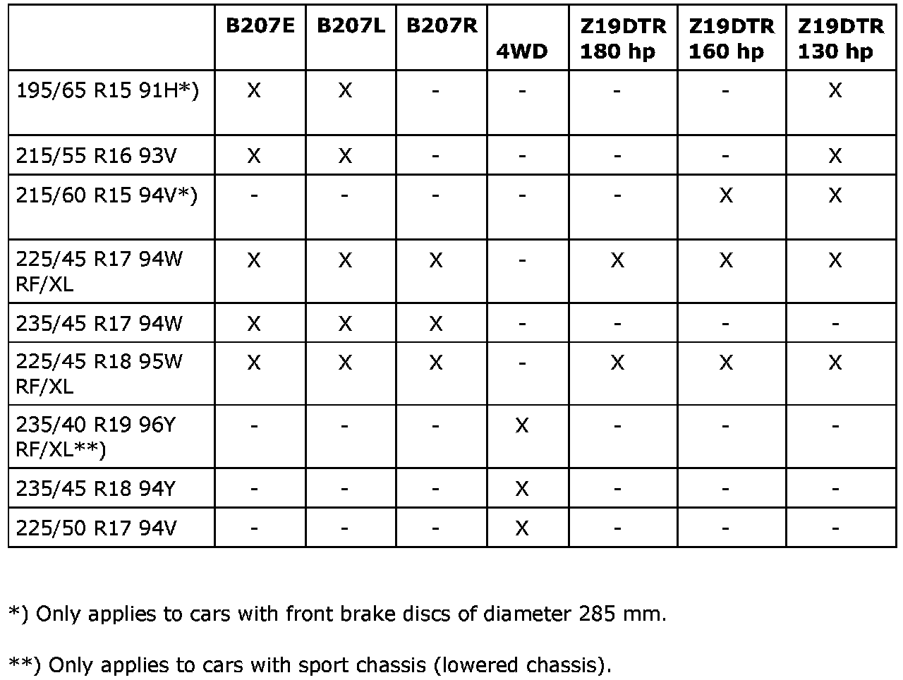
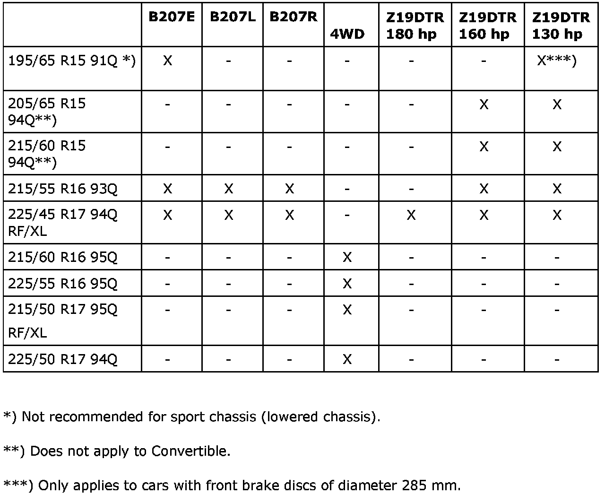
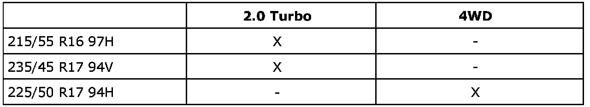
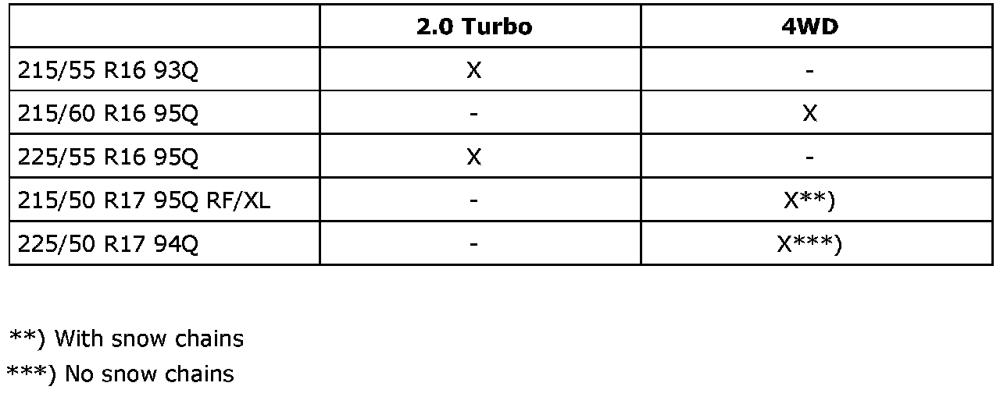

Recommended Tire Sizes
Recommended tire sizesSummer tires

Winter tires

Important
When driving with unstudded winter tires in countries such as Germany and France, there must be a warning decal with the text "Max 160 km/h" in plain view of the driver on the dashboard or similar.
All season tires, US/CA

Summer tires, US/CA
Winter tires, US/CA

Spare tire
Depending on the market, the car has a compact spare, normal tire or puncture repair kit.
The compact spare is a 125/85 R16 99M tire with a speed rating of 80 km/h and maximum mileage of 3500 km.
The normal tire size is either 195/65 R15 91H, 215/55 R16 93V or 215/50 R17 95W (XWD)
The puncture repair kit comprises a compressor and sealant.